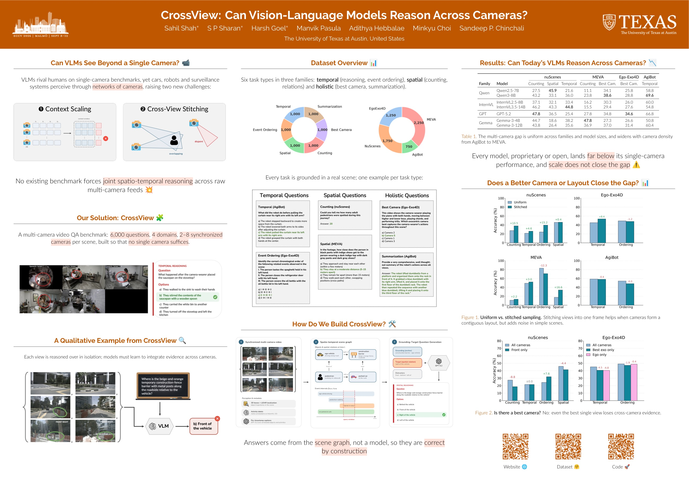
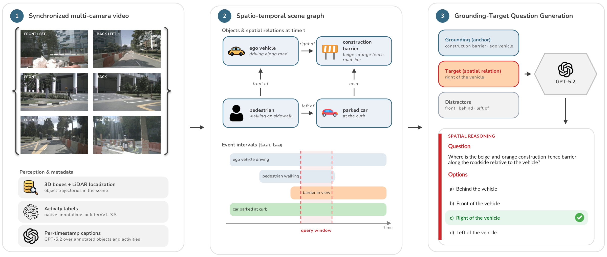
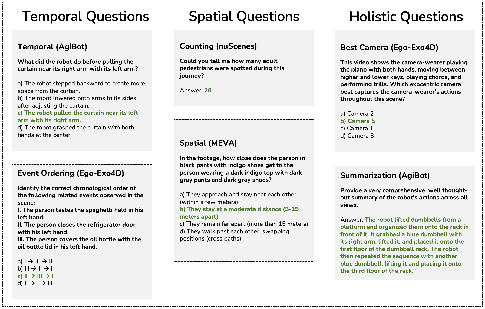
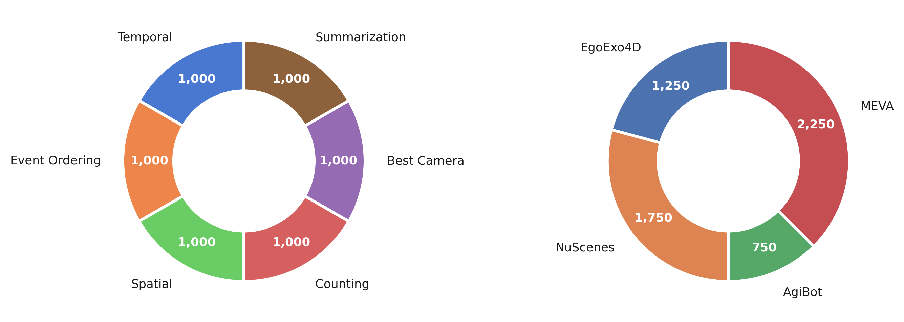
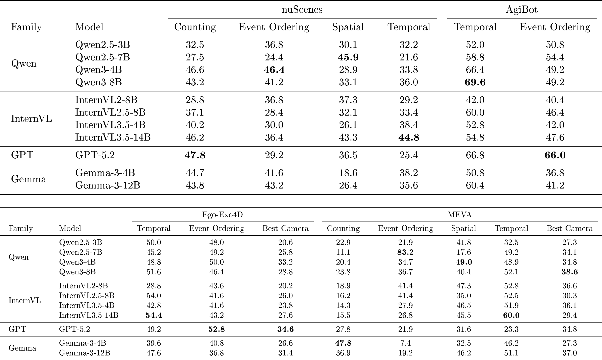

Six Reasoning Categories
CrossView groups six task types into three families: temporal reasoning, spatial reasoning, and holistic understanding. Every question requires integrating evidence across multiple synchronized camera views.

Video understanding benchmarks have long centered on single-camera settings, where modern multi-modal language models achieve strong performance across image and video tasks. Yet, the real world runs on multi-camera networks: autonomous vehicles, security systems, and robots all gather data across many simultaneous views. We argue that this is not simply "more" of the single-camera problem; it is fundamentally different. Multi-camera reasoning requires handling context that scales with the number of views, resolving occlusions visible from only a subset of cameras, judging which views matter, and integrating evidence across perspectives that may overlap or diverge. Current models struggle with exactly these challenges, yet no benchmark systematically targets them. We introduce CrossView, a multi-camera video question-answering benchmark spanning autonomous driving, security surveillance, egocentric/exocentric video, and robotics. Evaluation of proprietary models, such as GPT-5.2, and open-source models, like Qwen3-VL, reveals consistently low accuracy, with open-source models trailing by a wide margin. Performance scales strongly with a model's ability to jointly process multiple viewpoints, positioning CrossView as a rigorous benchmark for multi-camera video.
CrossView is built by a two-stage pipeline that turns raw multi-camera recordings into questions whose answers are correct by construction. We first consolidate each scene into a Spatio-Temporal Scene Graph (STSG), then query that graph programmatically to synthesize questions, using GPT-5.2 only to phrase them in natural language.

CrossView groups six task types into three families: temporal reasoning, spatial reasoning, and holistic understanding. Every question requires integrating evidence across multiple synchronized camera views.
Questions are split evenly across the six categories at 1,000 each, and drawn from four source domains. MEVA and nuScenes contribute the majority, with 2,250 and 1,750, while Ego-Exo4D and AgiBot supply 1,250 and 750.


Uniform-sampling accuracy (%) across all four domains. No family is consistently strong: GPT-5.2 lands near chance on Ego-Exo4D camera identification, and the tasks that demand synthesizing evidence across cameras, counting and best-camera selection, are the hardest everywhere. The gap widens with camera density, from the controlled AgiBot setup to the wide-area MEVA deployment.

@inproceedings{shah2026crossview,
author = {Shah, Sahil and Sharan, SP and Goel, Harsh and Pasula, Manvik and Hebbalae, Adithya and Choi, Minkyu and Chinchali, Sandeep},
title = {CrossView: Can Vision-Language Models Reason Across Cameras?},
journal = {Proceedings of the European Conference on Computer Vision (ECCV)},
month = {September},
year = {2026},
}